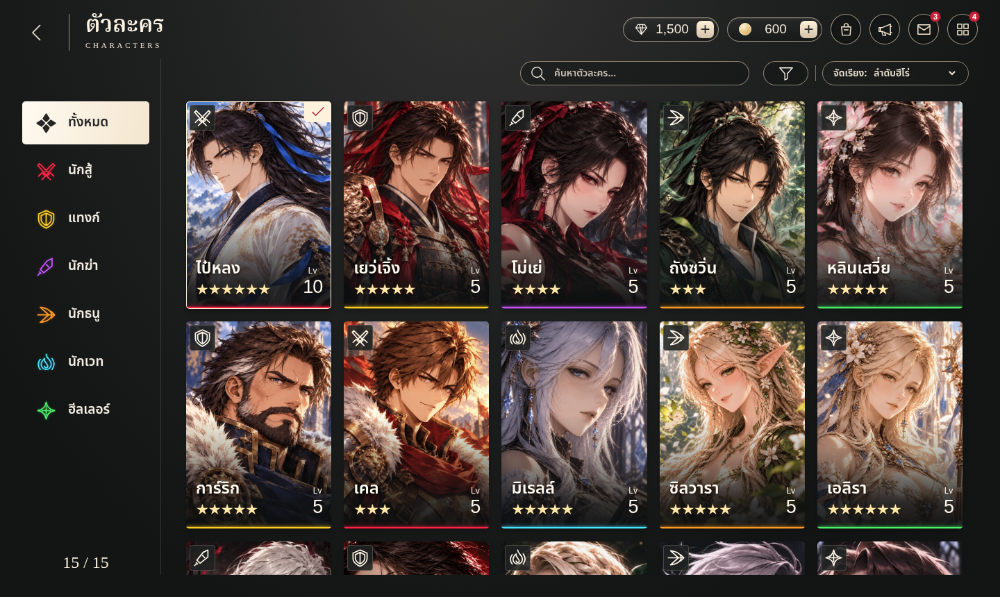

ตามคำขอเพิ่มเติม: ตัดขอบสีงาช้างพิเศษของใบที่ไฮไลต์ออก คงเครื่องหมายมุมบนและเส้นสีคลาสเดิม ขนาดการ์ดปัดเป็นความกว้างเต็มพิกเซลเหมือนกันทั้ง 5 คอลัมน์ ไม่ขยายหน้าหรือภาพฮีโร่

| Viewport | ความกว้างทุกใบ | ความสูงทุกใบ |
|---|---|---|
| 1280×720 | 189 px | 270 px |
| 1440×860 | 209 px | 298.5625 px |
| 1670×942 / 1920×1080 | 241 px | 344.28125 px |
การ์ดทั้ง 15 ใบในแต่ละ viewport มีขนาดเดียวกันจริง ไม่มีขอบไฮไลต์พิเศษ ภาพด้านบนเป็น screenshot จริง ไม่รีทัช ใช้เซฟ QA แยกจากผู้เล่น
Desktop เท่านั้น · ยังไม่ merge/deploy